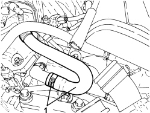
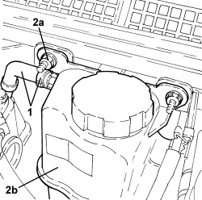
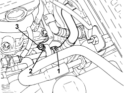
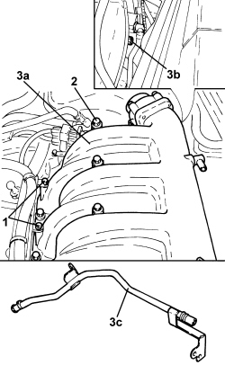

1088D33 WATER PUMP FEED INTERMEDIATE PIPING - R R
- Path
- Procedures > 10 ENGINE > 1088 ENGINE COOLING > 1088D COOLANT PIPES AND HOSES > 1088D33 WATER PUMP FEED INTERMEDIATE PIPING - R R
- Kind
- repair procedure (removal / refitting; the operation number is the code)
- Applies to
- engines: 3.2 JTS; all production periods
- Interactive page
- https://sloeber94.github.io/elrnDB-aBrrSpdr/en/#/946004264
Applies to: engines: 3.2 JTS; all production periods
 Removing
Removing
 Refitting
RefittingOp. 5530B52 BATTERY SUPPORT/DRIP TRAY - R.R
Op. 1016A10 SOUND-PROOFING COVER - R.R
Op. 1048A63 HOSE CONNECTING RESONATOR, FLOW METER AND THROTTLE BODY - R.R.
1. Loosen the band and disconnect the hose from the water pump intermediate supply pipe.

Applies to: engines: 3.2 JTS; all production periods
1. Loosen the band and disconnect the degassing pipe from the engine coolant reservoir.
2. Unscrew the engine coolant reservoir (2b) fixing nuts (2a) and move it aside.

Applies to: engines: 3.2 JTS; all production periods
1. Disconnect the rapid connector for the coolant return pipe from the heater.
2. Undo the bolt fixing the duplex pipes for the automatic transmission fluid heat exchanger to the engine block.
3. Undo the bolt fixing the water pump intermediate supply pipe.

Applies to: engines: 3.2 JTS; all production periods
1. Undo the bolts fixing the wiring bracket to the intake chamber.
2. Undo the bolts securing the intake chamber to the right cylinder head.
3. Lift up the intake chamber (3a) as necessary to unscrew the bolt (3b) fixing the water pump intermediate supply pipe (3c) and remove it.

Applies to: engines: 3.2 JTS; all production periods
Refitting
Removing- Place the water pump intermediate supply pipe in position and tighten the bolt fixing it to the intake chamber.
- Refit the intake chamber in its seat and tighten the bolts to the recommended torque.
Component | Fastening | dia | Value (daNm) | Validity |
|---|---|---|---|---|
Air chamber | Bolt | - | 2.3 | 3.2 JTS |
- Tighten the bolts fixing the wiring bracket to the intake chamber.
- Tighten the bolts fixing the intermediate water pump supply pipe to the right cylinder head.
- Tighten the bolt fixing the duplex pipes for the automatic transmission fluid heat exchanger to the engine block.
- Connect the rapid connector for the coolant return pipe from the heater.
- Place the engine coolant supply reservoir back in its housing and tighten the nuts.
- Connect the degassing pipe to the engine coolant reservoir and tighten the band.
- Connect the hose from the water pump intermediate supply pipe and tighten the band.
Op. 1048A63 HOSE CONNECTING RESONATOR, FLOW METER AND THROTTLE BODY - R.R.
Op. 1016A10 SOUND-PROOFING COVER - R.R
Op. 0010T21 ENGINE COOLANT - CHECK DENSITY AND TOP UP, IF NECESSARY